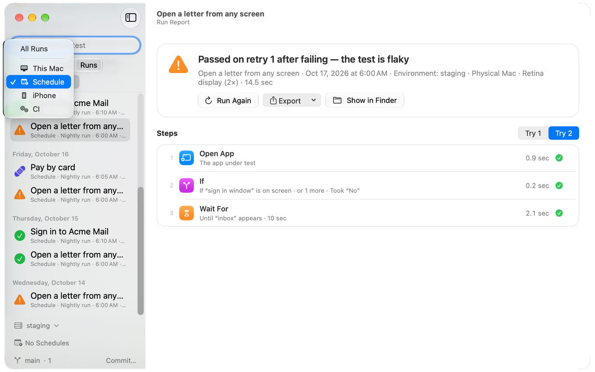

Retries, flaky tests and quarantine
UI tests sometimes fail for reasons that have nothing to do with the app: a slow network, a notification over the window. JEVision helps you tell such failures from real ones.

Project settings file
Settings shared by every test of a project go into jevision.project.json in the project folder and are committed with the tests. The file is optional. The app writes it from Settings → Advanced, Settings → AI and the sidebar, so you rarely edit it by hand.
{
"format": 1,
"retries": 2,
"quarantine": [
{ "test": "checkout/pay.flow.json", "reason": "Payment sandbox is down, issue #42", "until": "2026-11-03" }
],
"suggestQuarantineAfter": 3,
"localOnly": true,
"hide": [
{ "x": 0.7, "y": 0, "width": 0.3, "height": 0.08 }
],
"ai": {
"text": { "provider": "anthropic" }
},
"runModes": [
{ "folder": "checkout", "run": "parallel", "limit": 4 }
]
}formatis1.retries(optional) is the project's default number of retries, 0 to 10.quarantine(optional) lists tests in quarantine:testis a path relative to the project folder,reasonis optional, anduntil(optional) is the last day of the quarantine asYYYY-MM-DD, by the clock of the computer that runs the test. Withoutuntilthe quarantine lasts until someone releases the test.suggestQuarantineAfter(optional) is how many unreliable runs of a test within 7 days make the app suggest quarantine, 1 to 10. Default: 3.localOnly(optional) istrueto keep the project's screenshots on this Mac: see Screenshots and privacy.hide(optional) lists areas of the window painted over in every screenshot of the project: see Screenshots and privacy.ai(optional) names the AI provider and model the project asks for checks by meaning (screen) and for drafting tests and explaining failures (text): see Which AI answers. Never an API key.runModes(optional) says how the app runs the tests of a folder when you run the whole folder or Run All:"run": "sequential", one after another, or"run": "parallel", side by side, withlimitfrom 2 to 16 at a time (default 4).folderis a path relative to the project folder, or.for the project folder itself. A folder without an entry runs like the nearest folder above it that has one; with none, tests run one after another. Tests that use the screen still take turns. The app writes it from Run Tests in a folder's menu in the sidebar: One after another or Side by side, up to 2, 4 or 8 at a time.jevision rundoesn't read it: it runs side by side only with--parallel.
Retries
A failed test can run again a few times before it counts as failed. The number of retries comes from the first of these that is set:
--retriesofjevision run, theretriesof an assistant'srun_test, or the number chosen in the menu of the app's Run button;- the test's own
retries; - the project's
retriesinjevision.project.json.
Otherwise a test isn't retried. At most 10 retries. In a data-driven test, each row has its own retries.
What the retries tell you
A run that needed more than one attempt ends with one sentence about how they went. The report, the app and jevision run all show it:
- “Passed on retry 1 after failing — the test is flaky.” The app works, but the test doesn't always see it.
- “Failed 3 of 3 times, each time differently — the test may be flaky.” Compare what each attempt saw in the report.
- “Failed 3 times in a row — a real failure, not flakiness.” Every attempt failed the same way: look for a bug.
Flaky tests
JEVision also looks back over past runs. When the same test file, unchanged since (the same content), both passed and failed in the same environment over the last 30 days, the app marks it flaky in the sidebar, on the boards and in the run history, with the dates and counts as evidence. Changing the test starts its record afresh, because a changed test may behave differently.
A data-driven test is judged one row at a time: each report keeps which row ran (its number, its label and a fingerprint of its values, never the values themselves), so a row that fails now and then is flaky while the rows that never fail are not. Editing a row's values starts that row's record afresh. Reports written before this was kept count as one record for the whole test.
You can also mark a test flaky yourself: turn on Flaky in the test's details (click its name above the flowchart), or add "flaky": true to the test file. The mark is saved in the test, so everyone sees it in the sidebar and on the boards. It changes nothing in how the test runs; to keep its failures from failing Run All, put it in quarantine.
When to quarantine a test
A test that passes and fails by itself teaches people to ignore red results. JEVision counts the unreliable runs of each test, and each data row, over the last 7 days, and once there are 3 it suggests quarantine. A run is unreliable when:
- it passed only on a retry, or
- it failed after the same unchanged test had passed. A string of failures right after a pass counts once, so a real regression, which keeps failing, doesn't look like flakiness.
The suggestion is a small bandage mark next to the test in the sidebar. Open the test's details and its Quarantine section lists the unreliable runs, each a link to its report, and one button, Put in Quarantine until …, which puts the test in quarantine for 14 days with the number of unreliable runs as its reason. The test's menu in the sidebar does the same with Put in Quarantine for Two Weeks (Suggested). Nothing is changed until you click it.
To suggest sooner or later, change Suggest quarantine after in Settings → Advanced (1 to 10 runs, default 3). It is saved as suggestQuarantineAfter in the project file, so everyone who opens the project gets the same suggestions.
Quarantine
Quarantine is for tests whose failures shouldn't block anyone while they are being fixed, for example while a test server is down.
- Tests in quarantine still run, and their reports show the failure.
- Their failure doesn't fail Run All or the exit status of
jevision run. - The JUnit report lists such a failure as skipped, with the reason and the failure.
- The sidebar, the boards and the reports mark these tests, and the test's details say “In quarantine until Nov 3”.
To put a test in quarantine, choose Quarantine… in its menu in the sidebar or in the test's details. To release it, choose Release from Quarantine there, or Release under Retries and quarantine in Settings → Advanced. You choose the last day: 14 days from today unless you pick another, or no end at all, in which case the test stays in quarantine until you release it. Change… in the test's details moves the day or the reason.
When the last day is past, the test comes back by itself: from the next day its failures fail Run All and jevision run like any other, and its details say it is not in quarantine. Nothing has to be edited. The entry stays in jevision.project.json and Settings → Advanced lists it as “Quarantine ended Nov 3” until someone releases it, so you can see what was quarantined; putting the test in quarantine again replaces it.
To count their failures like any other, for example in a nightly build, add --include-quarantined-failures:
jevision run tests/ --include-quarantined-failuresFailures of a test whose quarantine has ended count either way.
Quarantine is meant to be short, which is why it ends by itself. Give a reason that says what must happen to release the test, such as an issue number.
Screenshots and privacy
Screens of the app under test can show names, email addresses or account numbers. Two settings in jevision.project.json protect them for everyone who runs the project's tests, whatever each person's own settings say. Both are in Settings → AI → This project.
- Areas always hidden (
hide). Parts of the window painted over in solid grey in every screenshot of the project: before it is saved in a report or as a new reference image, sent to an AI model for a check by meaning, or given to an AI assistant. Each area isx,y,widthandheightin fractions from 0 to 1 of the window, from its top-left corner, like the areas of a check, so it fits the window at any size. Click Edit… next to “Areas always hidden” to draw them over a picture of the app's window; the picture only helps you place them and isn't saved. - Only models on this Mac for this project (
localOnly). Screenshots never go to a cloud service: checks by meaning work only with models that run on this Mac, a check that would need a cloud model stops with a message, and assistants get no screenshots.
Before any picture leaves the Mac, JEVision also paints over the areas the check itself hides or ignores and every password field it finds through the Accessibility permission. The report shows the picture exactly as it was sent, marked “masked before sending”.
Run videos are painted over the same way, frame by frame: the areas always hidden, in every window of the app, and the password fields in them. A window that moves keeps its areas covered. A password field that has just appeared is found within about half a second.